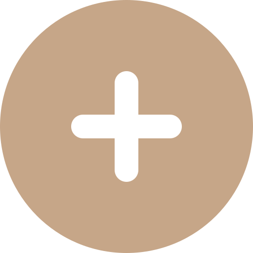
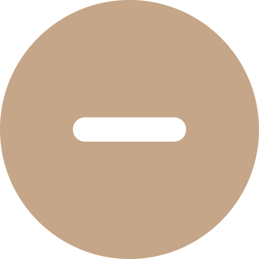

Éco-conception : n.f. approche méthodique, qui prend en considération les aspects environnementaux du processus de conception et développement dans le but de réduire les impacts environnementaux négatifs tout au long du cycle de vie d’un produit. ISO 14006
En tant qu’approche produit, les méthodes d’éco-conception intègrent des impacts externes à l’entreprise. Elle se distingue ainsi des bilans d’impacts comme les audits énergétiques ou les bilans carbone qui se restreignent généralement au périmètre de l’entreprise.
Dans la vision française du développement durable, portée notamment par l’ADEME, l’éco-conception s’inscrit comme l’un des 7 piliers de l’économie circulaire.
Si dans sa mise en place, l’éco-conception est bien du ressort des acteurs économiques, elle devra, dans une logique « cycle de vie », agir sur l’ensemble des thématiques pour être pertinente.
Les démarches et les outils de l’éco-conception sont très cadrés, néanmoins, définir un objet comme éco-conçu est davantage problématique. Un produit ou un service ne peut être intrinsèquement éco-conçu. Il l’est relativement à un autre, à un instant donné, dans un référentiel d’hypothèses donné. Il est donc à voir davantage comme un produit ayant bénéficié d’une évaluation puis d’une réduction de son impact.

• Plus accessible que l'ACV complète
• Moins précisMéthode similaire à l’ACV avec modifications variables selon la méthode : le nombre de critères et d’étapes considérés, le type et la précision des données, la finesse de la modélisation. Le Bilan Produit développé par l’ADEME est un exemple gratuit d’ACV simplifiée.
Analyse sur le cycle de vie en ne considérant ou en se rapportant à un seul critère : carbone (ISO 14064), eau (ISO 14046) et matières. Cet outil permet d’illustrer de manière saisissante certains impact : 10 000L d’eau pour produire un jean, 70kg de matières et 70 métaux différents pour un smartphone d’en moyenne 120g.
Étude des impacts d’un produit sur l’ensemble de son cycle de vie grâce à une modélisation des différents flux de matière et d’énergie. L’unité fonctionnelle (ex stylo : écrire sur une distance de 90km) permet de comparer plusieurs produits entre eux. L’ACV est uniquement un calculateur d’impact et ne fournit pas de solution ou conseil concernant la reconception du produit.
L’évaluation de la solution s'effectue en remplissant des grilles prédéfinies correspondantes à des critères environnementaux et des phases spécifiés. L’examen des différents curseurs permet d’obtenir par des calculs systématiques une appréciation environnementale du produit ou service.
Etude simplifiée sur l’ensemble du cycle de vie en se focalisant sur un nombre restreint de critères. Ce travail peut permettre d’identifier facilement les points de vigilance du cycle de vie en vue d’une étude approfondie sur les étapes défavorables.
Listes de bonnes pratiques et recommandation à suivre lors de la conception d’un produit ou d’un service. Certaines entreprises intègrent ces recommandations à leur processus de conception.
Listes de questions qui ont pour but d’aider le concepteur à appréhender les impacts éventuels de son produit ou service aux différentes étapes de son cycle de vie et de prendre des décisions en conséquence. Certaines entreprises développent leurs propres check-lists en interne. Les plus connus sont la matrice TRIZ, la roue de Brezet ou encore l’eco-design pilot accessible en ligne.
Multi/monocritère : prise en compte ou non de plusieurs critères environnementaux tels que les gaz à effet de serre, l'acidification des sols, l'eau, etc.
Multi/monophase : prise en compte ou non de plusieurs phases du cycle de vie de la solution.
Il existe donc un grand nombre d’outils pour mener des projets d’éco-conception. Les entreprises doivent néanmoins s’approprier ces outils pour aboutir à des solutions pertinentes.
Le pôle éco-conception préconise un déploiement en six étapes :
Un certain nombre de normes sont aussi des supports de déploiement de l’éco-conception à un niveau plus global dans les entreprises :
ISO 14006 : Systèmes de management environnemental - Lignes directrices pour intégrer l'éco-conception
ISO 14062 : Management environnemental - Intégration des aspects environnementaux dans la conception et le développement de produit
NF X 30-264 : Management environnemental - Aide à la mise en place d'une démarche d'éco-conception
Ces normes, ainsi qu’une dizaine d’autres normes sectorielles, n’ont pas de vocation de certification. Elles n’imposent pas non plus d’outils en particulier. Elles sont des guides de préconisation pour une mise en place rationnelle et la pérennisation d’une démarche d’éco-conception au sein des entreprises, quels que soient leur taille et leur domaine d’activité.
Il est néanmoins possible d’obtenir la certification Afaq éco-conception délivrée par l’afnor. Celle-ci n’a pas pour but d’évaluer le ou les produits éco-conçus mais la crédibilité de la démarche mise en place au sein de l’entreprise.
L’éco-conception est aujourd’hui un acte volontaire. Certaines briques réglementaires apparaissent peu à peu sur des thématiques ciblés (réparabilité, durabilité) et dans des secteurs précis (électroménager).
L’éco-conception en tant que démarche est mentionnée dans la loi anti-gaspillage pour une économie circulaire (AGEC) :
« Les producteurs soumis aux filières pollueur-payeur devront élaborer tous les cinq ans un plan d’action de prévention et d’écoconception de leurs produits. Ceux-ci devront contenir plus de matière recyclée et être davantage recyclables. Ce plan sera révisé tous les cinq ans. Il pourra être individuel ou commun à plusieurs producteurs. Il comportera un bilan du plan précédent et définira des objectifs et des actions de prévention et d’écoconception. Ce seront les producteurs qui élaboreront ces plans et qui les transmettrons à l’éco-organisme. Une synthèse de ces plans sera accessible au public. »
A noter aussi que la loi AGEC rendra également obligatoire l’enseignement de l’éco-conception dans les écoles nationales supérieures d’architectures.
D’après le Guide pratique des allégations environnementales à l’usage des professionnels et des consommateurs du ministère de l’économie, pour revendiquer qu’un produit est éco-conçu, il est nécessaire d’indiquer :
Que permet l’éco-conception :